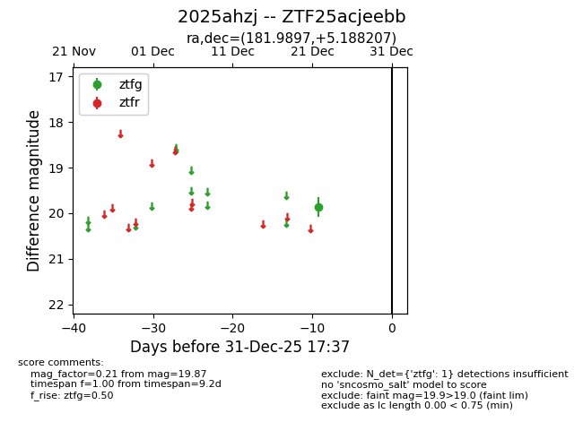
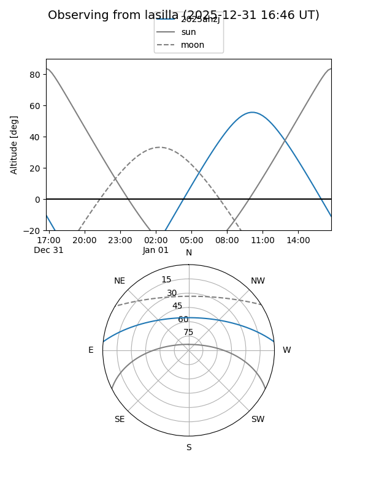
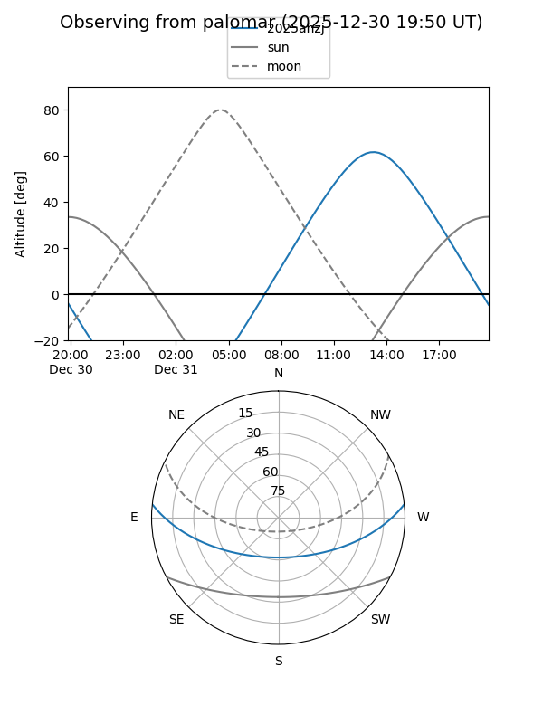

2025ahzj
Target 2025ahzj at 2025-12-22 21:06
Aliases and brokers:
FINK: fink-portal.org/ZTF25acjeebb
Lasair: lasair-ztf.lsst.ac.uk/objects/ZTF25acjeebb
ALeRCE: alerce.online/object/ZTF25acjeebb
TNS: wis-tns.org/object/2025ahzj
YSE: ziggy.ucolick.org/yse/transient_detail/2025ahzj
alt names
ZTF25acjeebb (ztf,fink_ztf)
2025ahzj (tns,yse)
Coordinates:
equatorial (ra, dec) = 181.9897,+5.18821
equatorial (HMS+DMS) = 12:07:57.54,+05:11:17.54
galactic (l, b) = (275.7358,+65.73758)
Flags:
Photometry:
last ztfg=19.87
1 ztfg detections
Lightcurve

Visibility


Additional plots